Solid faces
So far the cube has been made of wire: 12 lines with nothing between them. Today we fill in its six sides with colour, paint them in the right order, skip the ones that face away, and light them with a lamp. By the end the cube looks like a real solid object tumbling in the air.
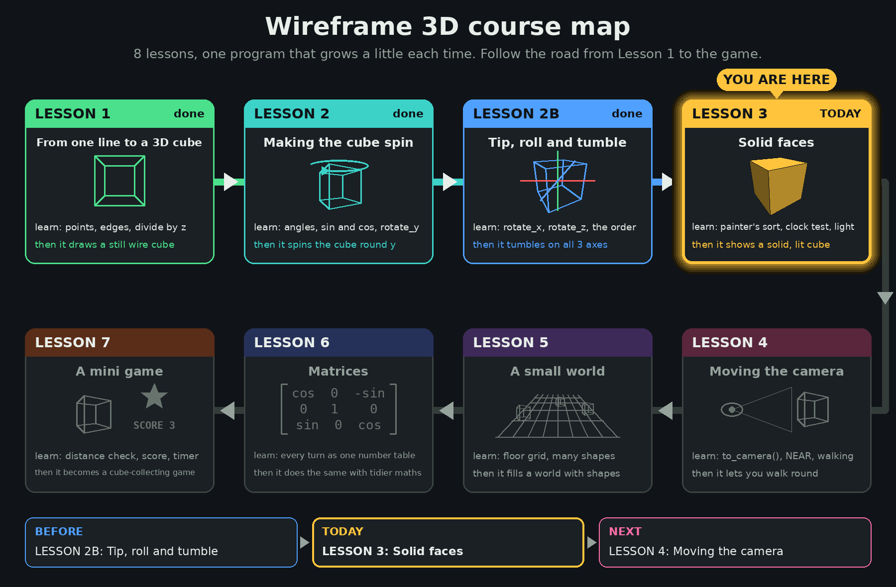
Before: Lesson 2B made the wire cube tumble on all three axes.
Today: fill the six faces with colour, paint them far to near, hide the back ones and light them.
Next: Lesson 4, Moving the camera lets you walk round this solid cube.
From today on every shape in the course is solid. The painter's sort is what lets Lesson 5 draw many shapes in the right order.
Lesson plan
Who it's for: someone who finished Lesson 2B and can run step3_tumble_cube.py. You need rotate_x, rotate_y, rotate_z, rotate_all and project() from before. Needs: Python 3 and pip install pygame-ce, as before.
By the end, the learner can:
- List a face as its 4 corner numbers, in clockwise order seen from outside, and fill it with
pygame.draw.polygon. - Explain why painting faces in list order looks wrong, and fix it with the painter's method (furthest face first).
- Work out a face's average z by hand, and sort a list of tuples with
sort(reverse=True). - Use two screen arrows and the cross product to tell if a face is turned toward you.
- Find a face's pointer, and use the dot product to make it brighter or darker under a lamp.
Table 3.0.2Lesson plan: time, part and what happens
| Time | Part | What happens |
|---|---|---|
| 0–4 | Recap | Where we are going, the start pose, and the recipe with today's new steps. Q1. |
| 4–14 | 1. Edges to faces | A face is 4 corners in a loop. The 6 faces as a flat net. Clockwise order. The bow tie. One face on the screen in pixels. Q2–Q4. |
| 14–18 | 2. The first problem | Fill all 6 faces in list order and watch the back face cover the front. Run step1_fill_faces.py. Q5. |
| 18–28 | 3. The painter's method | Far things first. Average z by hand, all 6 faces at the start pose, sorting tuples. Run step2_painter.py. Q6–Q8. |
| 28–39 | 4. Hide the back faces | Why 3 faces are wasted. The clock test. Arrows on screen, the cross product, two worked faces, all 6 faces. Run step3_hide_back_faces.py. Q9–Q12. |
| 39–48 | 5. Light and shade | The torch and the card. Face pointers. The LIGHT arrow. The dot product. Brightness to colour. Run step4_lit_cube.py. Q13–Q16. |
| 48–50 | Wrap up | The ideas from today. Final check Q17. Preview of Lesson 4. |
Recap: where we are going 4 MIN
At the end of Lesson 2B the cube tipped, turned and rolled, but it was still a wire frame: you could see the back edges straight through the front. Today we build a solid cube in four small steps. Each step is its own program, and each one fixes something the step before got wrong.
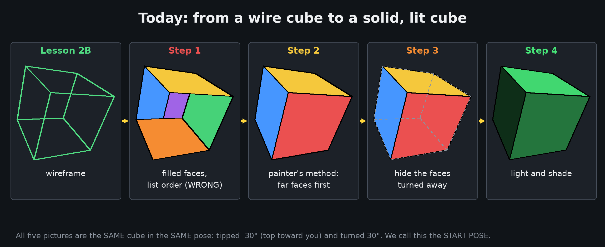
Why this pose? At tip 0, turn 0, roll 0 you look straight at the front face and see nothing else. Tipping by -30° brings the top into view, and turning by 30° brings the left side into view, so you can see three faces at once. Remember from Lesson 2B that a negative tip is simply a tip the other way: the top comes toward you instead of going away.
The recipe for each corner is exactly the one from Lesson 2B. What is new happens afterwards, once per face.
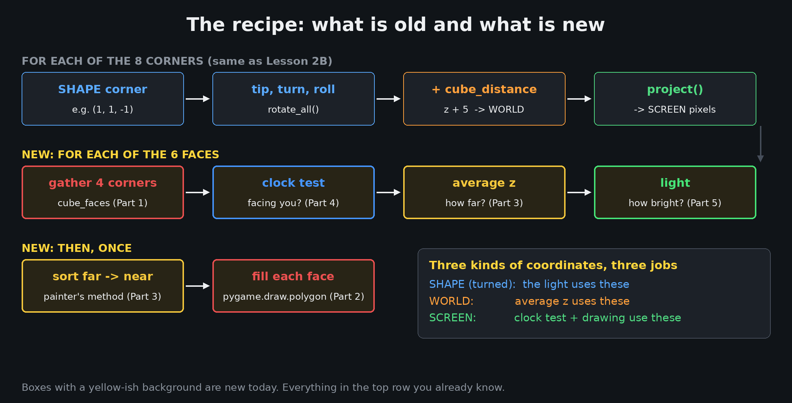
Q1At the start pose, which three faces can you see? Which three are hidden?
Show answer
Part 1: From edges to faces 10 MIN
1.1 What a face is
An edge joins 2 corners, so we stored it as 2 numbers, like (4, 5). A face is one flat side of the cube. It has 4 corners, so we store it as 4 numbers. The front face is the side nearest you before any turning, and its corners are 4, 5, 1 and 0.
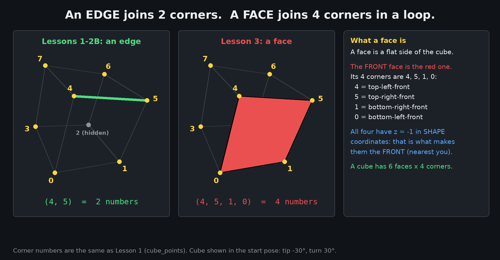
Why are those four the front? In cube_points every corner has z = -1 or z = +1 in SHAPE coordinates (measured from the cube's own centre, (0, 0, 0)). Corners 4, 5, 1 and 0 are the four with z = -1, the side toward you. Each face is the four corners that share one letter's value: the top is the four with y = +1, the left is the four with x = -1, and so on.
1.2 All six faces
The easiest way to see all six faces at once is to unfold the cube flat, like a cardboard box opened out. Each square shows a face as you would see it standing outside the cube, looking at that face.
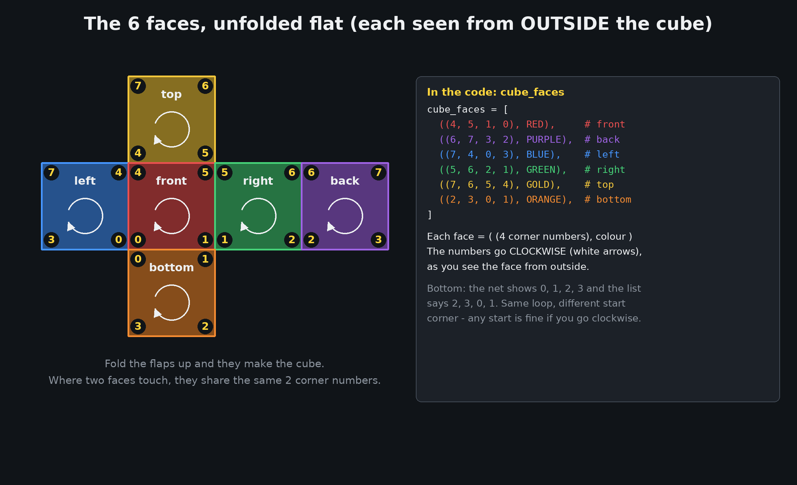
In the code each face is a tuple of two things: the 4 corner numbers, and a colour. We give every face its own colour today so you can always tell which face is which. In step 4 we switch to one green for the whole cube.
cube_faces = [
((4, 5, 1, 0), RED), # front (all have z = -1)
((6, 7, 3, 2), PURPLE), # back (all have z = +1)
((7, 4, 0, 3), BLUE), # left (all have x = -1)
((5, 6, 2, 1), GREEN), # right (all have x = +1)
((7, 6, 5, 4), GOLD), # top (all have y = +1)
((2, 3, 0, 1), ORANGE), # bottom (all have y = -1)
]We no longer need cube_edges: the outline of each face already includes all 12 of the cube's edges.
1.3 The order of the corners
The four numbers in each face are not in a random order. Stand outside the cube, facing the face, and list its corners in the order a clock hand would pass them.
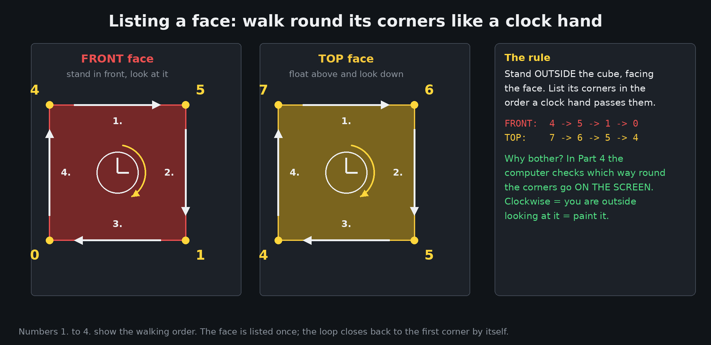
There are two reasons for this rule. The first you can see straight away: pygame joins the points in the order you give them. If you jump across the face, the outline crosses itself.
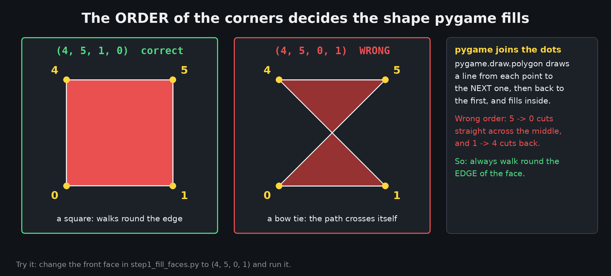
1.4 One face on the screen
To fill a face we swap its 4 corner numbers for the 4 SCREEN points we already worked out with project(), then hand them to pygame.draw.polygon. Here is the front face with the cube not turned at all, so the numbers come out round.
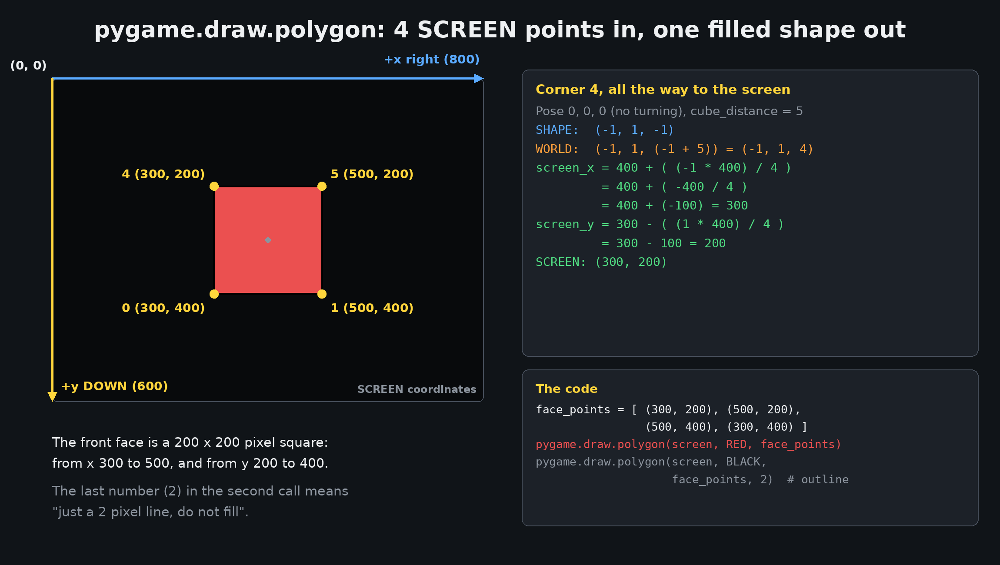
(400 / 4) = 100 pixels per unit.Panels: 3.1.5a (left) the front face on the SCREEN · 3.1.5b (top right) corner 4 all the way to the screen · 3.1.5c (bottom right) the codeCorner 4, step by step: in SHAPE coordinates it is (-1, 1, -1). Adding cube_distance gives WORLD (-1, 1, (-1 + 5)) = (-1, 1, 4). Then screen_x = 400 + ( (-1 * 400) / 4 ) = 400 + (-100) = 300 and screen_y = 300 - ( (1 * 400) / 4 ) = 300 - 100 = 200.
We call pygame.draw.polygon twice for each face: once to fill it, and once more with a width of 2 to draw a thin black outline, so you can see where one face ends and the next begins.
Q2Which 4 corners make the right face? What do they have in common?
Show answer
Q3The front face could also be written (5, 1, 0, 4). Is that still correct? What about (4, 0, 1, 5)?
Show answer
(5, 1, 0, 4) is correct: it is the same clockwise loop, starting at corner 5. (4, 0, 1, 5) walks the same edge but ANTICLOCKWISE. It still draws a square, but in Part 4 the computer will think that face is turned away and skip it.Q4With the cube not turned, the back face's corners are 6 units away. How wide is the back face on screen?
Show answer
(400 / 6) = 66.67 pixels. The face is 2 units wide, so it is (2 * 66.67) = 133.3 pixels wide, from x = 333.3 to x = 466.7. It is smaller than the 200 pixel front face because it is further away.Part 2: The first problem 4 MIN
Step 1 does exactly what Part 1 described: for each face in cube_faces, look up its 4 screen points and fill them. Watch what happens when the faces are painted in the order they sit in the list.
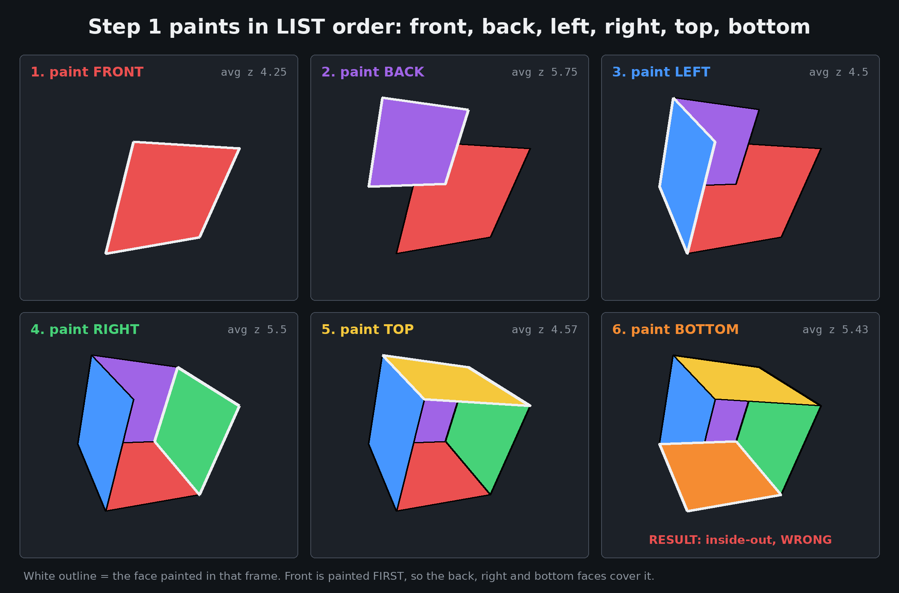
This is the whole problem with filled faces: the screen has no idea which face is in front. Whatever you paint last wins. Run the program and see it for yourself.
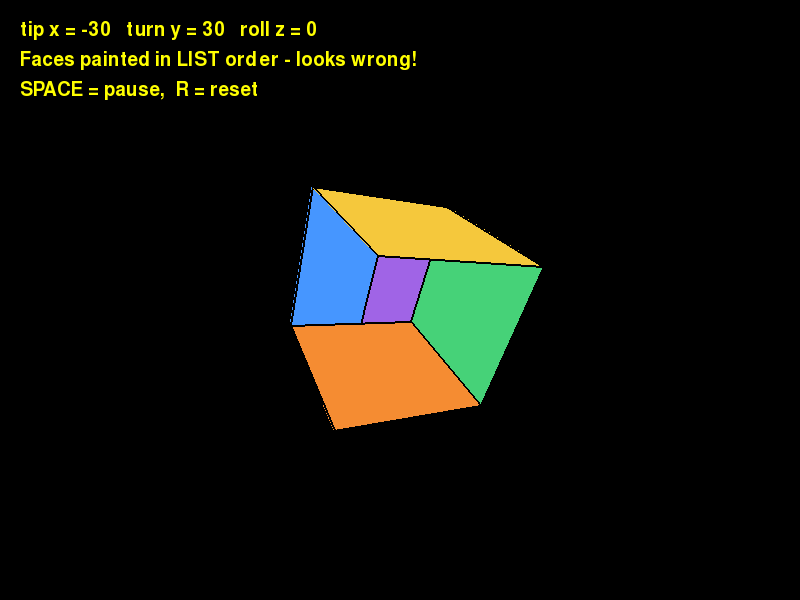
step1_fill_faces.py at the start pose. SPACE pauses, R goes back to the start pose.Q5Would moving the front face to the end of cube_faces fix the problem?
Show answer
Part 3: The painter's method 10 MIN
3.1 Far things first
A painter doing a landscape paints the sky first, then the far mountains, then the hills, and the tree in front last. Each layer covers the parts of the layers behind it that should be hidden. Nobody has to work out which bits of the mountain are behind the tree.
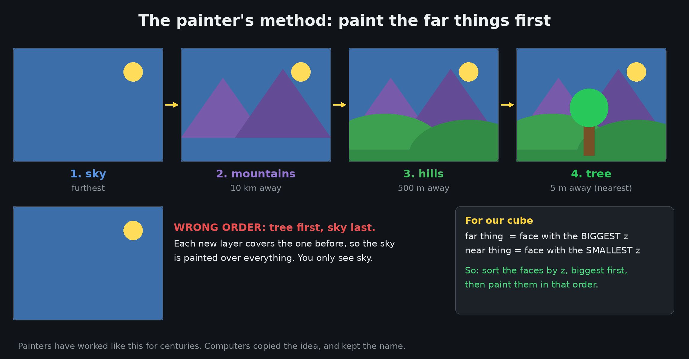
3.2 How far away is a face?
A corner has one z, but a face has four corners, and when the cube is turned they are all at different distances. We need one number for the whole face, so we take the average: add the four WORLD z values and divide by 4.
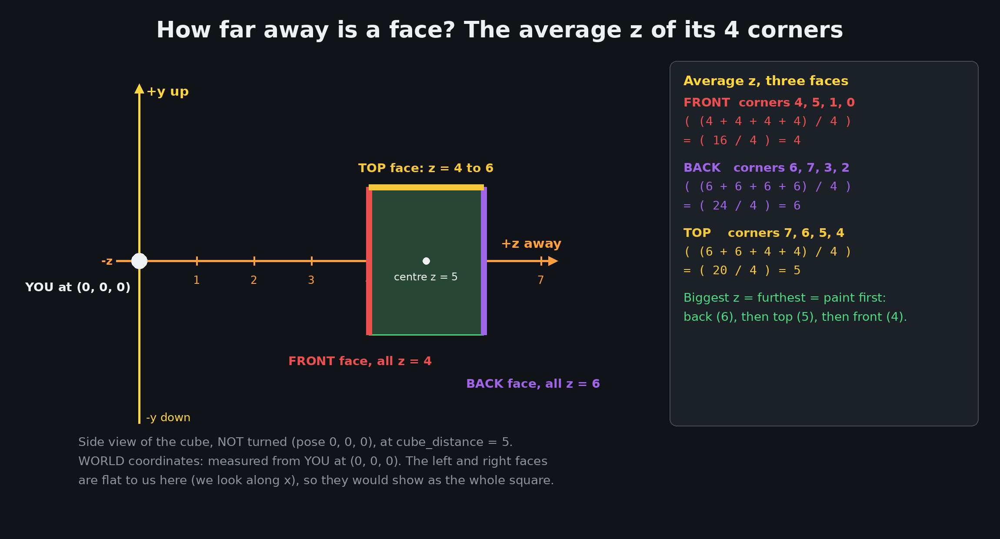
cube_distance has been added.Front: ( (4 + 4 + 4 + 4) / 4 ) = 4. Back: ( (6 + 6 + 6 + 6) / 4 ) = 6. Top: two corners at z = 6 and two at z = 4, so ( (6 + 6 + 4 + 4) / 4 ) = ( 20 / 4 ) = 5. The biggest number is the back face, so it is painted first. In code:
def average_z(corners, world_points):
total = 0
for corner_number in corners:
x, y, z = world_points[corner_number]
total = (total + z)
return (total / len(corners)) # len(corners) is 43.3 The start pose, all six faces
Now the real thing. At the start pose every corner is at a different distance, so every face gets a different average.
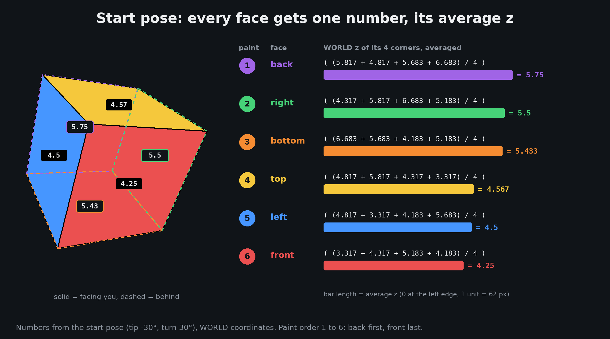
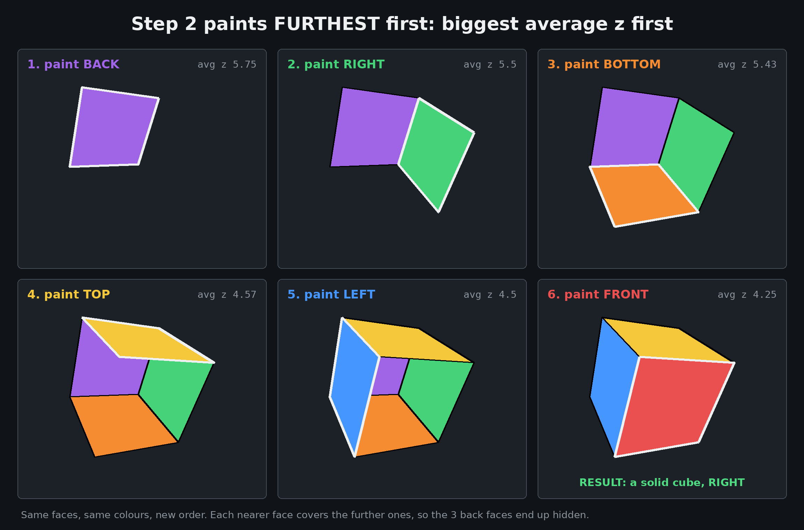
3.4 Sorting in Python
In step 2, for each face we build a tuple of three things: (average z, screen points, colour), and add it to a list called faces_to_draw. Then one line sorts the whole list.
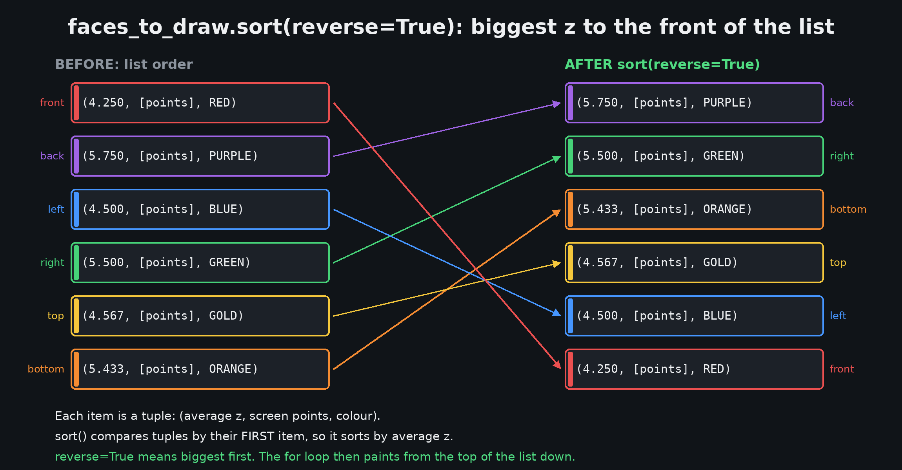
sort() compares tuples by their first item, which is why we put the average z first. reverse=True puts the biggest first.Panels: 3.3.5a (left column) BEFORE: list order · 3.3.5b (right column) AFTER sort(reverse=True)faces_to_draw.sort(reverse=True) # furthest first
for distance, face_points, colour in faces_to_draw:
pygame.draw.polygon(screen, colour, face_points) # filled
pygame.draw.polygon(screen, BLACK, face_points, 2) # outline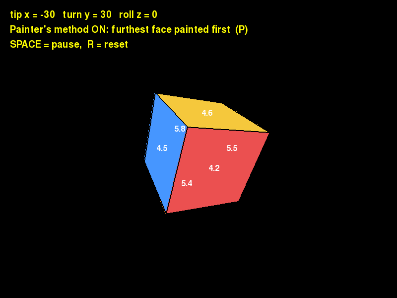
step2_painter.py writes each face's average z in its middle. All six labels are drawn, so the labels of the hidden faces float on top. Press P to switch the painter's method off and compare with step 1.Q6A face has corners at WORLD z = 3.2, 4.0, 5.0 and 4.2. What is its average z?
Show answer
( (3.2 + 4.0 + 5.0 + 4.2) / 4 ) = ( 16.4 / 4 ) = 4.1.Q7Why does average_z use world_points and not the turned SHAPE points?
Show answer
Q8What goes wrong if you write faces_to_draw.sort() without reverse=True?
Show answer
Part 4: Hide the back faces 11 MIN
4.1 Wasted paint
The painter's method works, but look at what it does: it paints all six faces, then paints three more on top. The three faces that point away from you are always completely covered.
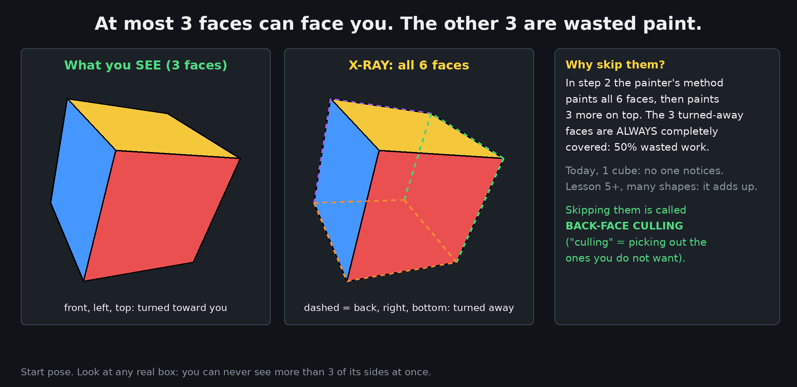
With one cube nobody notices the waste. Once there are dozens of shapes on screen, it adds up. We keep the painter's method too: with one cube the culling alone would be enough, but with many shapes we will need both.
4.2 The clock test
This is where the clockwise rule from Part 1 pays off. Every face is listed clockwise as seen from outside. If a face turns its back on you, you are looking at it from behind, and the same corners now go round the other way on the screen.
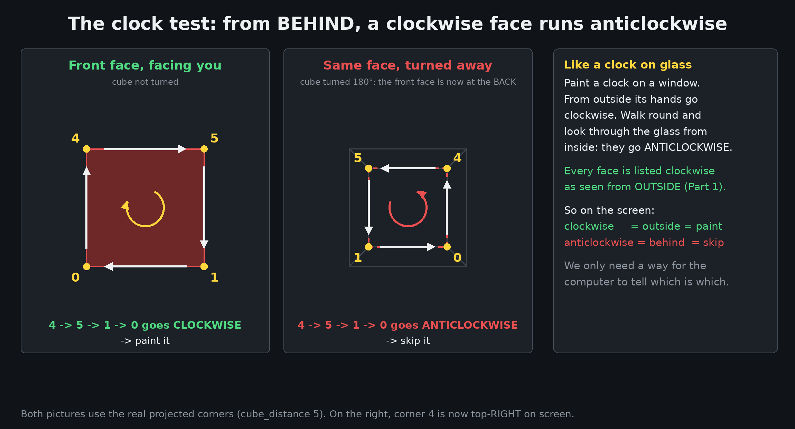
Corners go CLOCKWISE on the screen: you are outside, looking at the face. Paint it.
Corners go ANTICLOCKWISE on the screen: the face has its back to you. Skip it.
You can see which way round the corners go just by looking. The computer can't, so we need a sum that gives a positive number for clockwise and a negative number for anticlockwise. That sum is built from arrows.
4.3 Arrows on the screen
An arrow says how to get from one point to another: how far across, and how far down. You get it by taking the start point away from the end point. We use the face's first three corners and call them a, b and c. Arrow A goes from a to b, and arrow B goes from a to c.
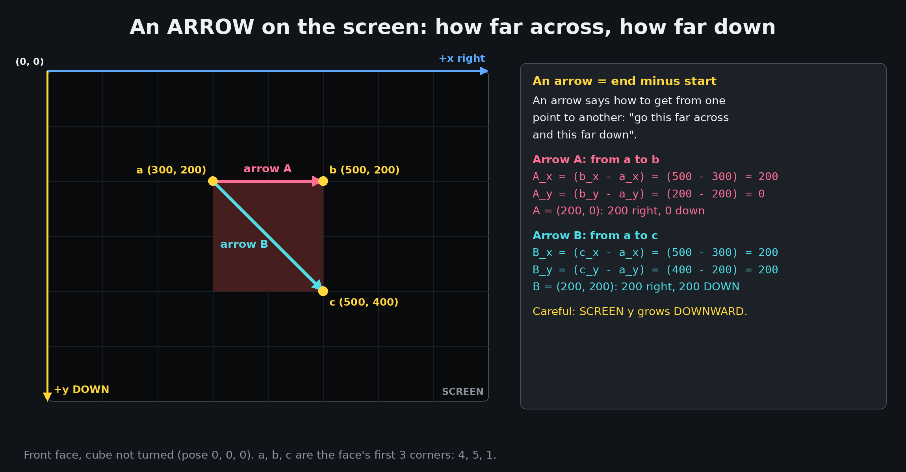
4.4 The cross product
Now the sum. It is called the cross product, and for two flat arrows it is one line:
cross = ( (A_x * B_y) - (A_y * B_x) )
Positive: B turns CLOCKWISE from A on the screen. Negative: anticlockwise. Zero: they point the same way (the face is exactly edge-on).
The easiest way to believe it is to try the simplest arrows there are, each 1 long.
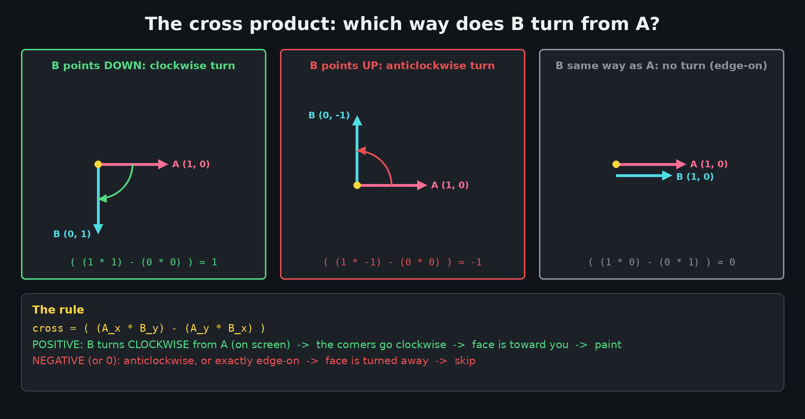
Here it is on the front face from Fig 3.4.3, bracket by bracket (Fig 3.4.5 shows the same sum):
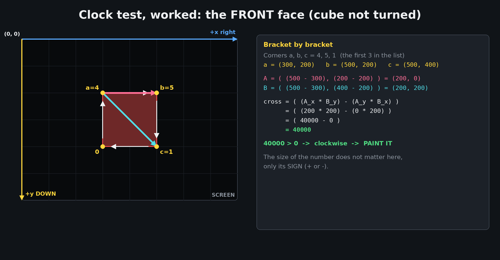
And on the back face, which is further away and seen through the cube:
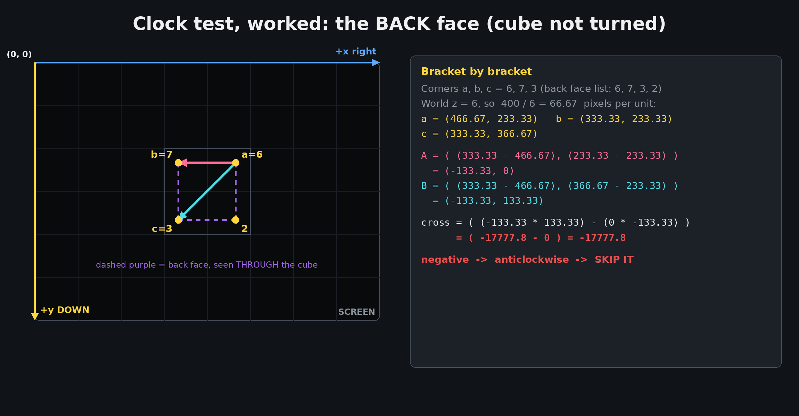
4.5 All six faces at the start pose
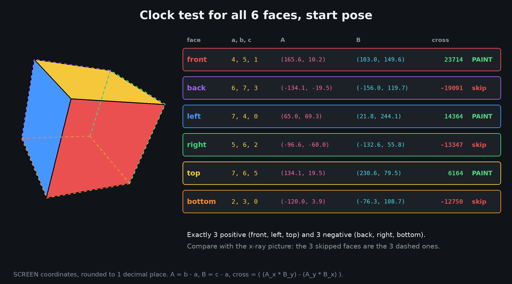
In code it is one small function. Step 3 calls it for every face and uses continue to jump straight on to the next face when the answer is no.
def is_facing_you(face_points):
a_x, a_y = face_points[0]
b_x, b_y = face_points[1]
c_x, c_y = face_points[2]
arrow_a_x = (b_x - a_x)
arrow_a_y = (b_y - a_y)
arrow_b_x = (c_x - a_x)
arrow_b_y = (c_y - a_y)
cross = ( (arrow_a_x * arrow_b_y) - (arrow_a_y * arrow_b_x) )
return (cross > 0)
# inside the face loop:
if not is_facing_you(face_points):
continue # skip this face, go on to the next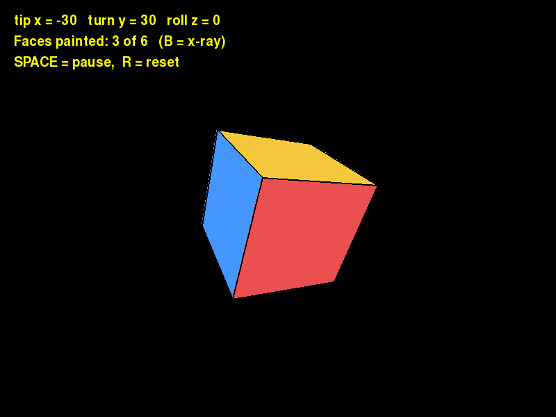
step3_hide_back_faces.py shows how many faces it painted. Press B for x-ray mode, which draws all six outlines so you can see the hidden ones.Q9Work out the cross product of A = (3, 1) and B = (1, 2). Clockwise or anticlockwise?
Show answer
( (3 * 2) - (1 * 1) ) = ( 6 - 1 ) = 5. Positive, so B is a clockwise turn from A on the screen.Q10As the cube tumbles, can the "Faces painted" number ever be 4? Can it be 1?
Show answer
Q11What do you see if you change (cross > 0) to (cross < 0)?
Show answer
Q12Why do we use SCREEN points for the clock test, and not SHAPE or WORLD points?
Show answer
Part 5: Light and shade 9 MIN
5.1 The torch and the card
Shine a torch at a card. When the card faces the torch it is bright. Tilt it and it gets dimmer, because the same rays are spread over a slanting surface. Turn it edge-on and no light lands on it at all.
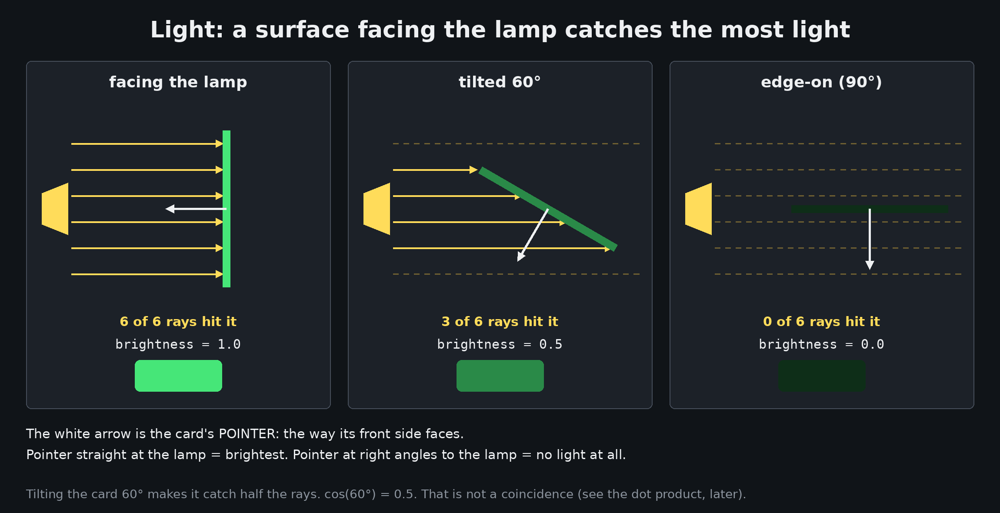
So to light a face we need two arrows: one for the way the face points, and one toward the lamp. Then we need a sum that tells us how closely they line up.
5.2 The face pointer
Every face has a pointer: an arrow from the centre of the cube, straight out through the middle of the face. For our cube every pointer is exactly 1 long and lies along one axis.

How do we find a pointer after the cube has turned? Because the cube's centre is (0, 0, 0), the middle of a face IS its pointer. And the middle of a face is the average of its 4 corners, done separately for x, y and z, just like average z in Part 3.

cube_distance is added. If you used WORLD points, the arrow would start at the cube's centre 5 units away instead of at (0, 0, 0).Panels: 3.5.3a (left) FRONT face, not turned · 3.5.3b (right) FRONT face at the start poseCan we trust that? Let's turn the front pointer (0, 0, -1) with Lesson 2B's rules instead and see if we get the same answer.
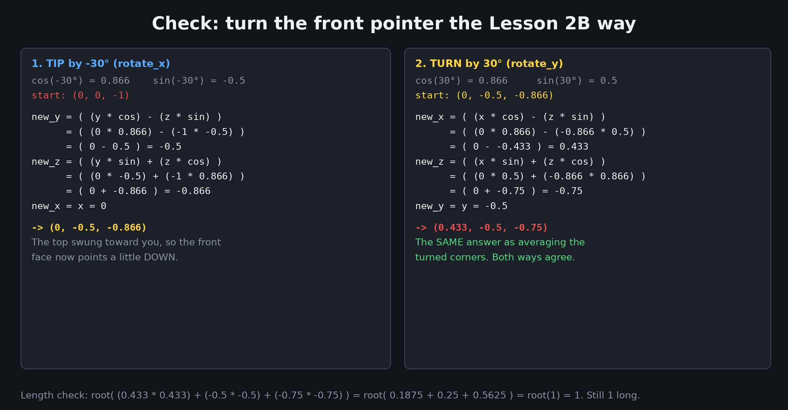
In the code, face_pointer(corners, turned_points) does the averaging. This is why step 4 now keeps a third list, turned_points, beside world_points and screen_points.
5.3 The light arrow
The second arrow points from the cube toward the lamp. It is a direction, not a position: it says which way the lamp is, not where it is.
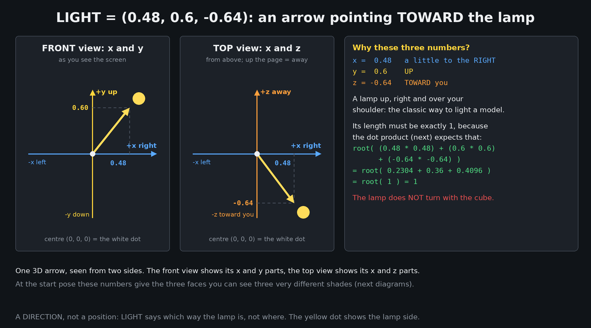
Why these numbers? A lamp up, to one side and in front is how photographers light an object, because then the three faces you see each get a different brightness. 0.48, 0.6 and 0.64 were picked because together they make an arrow exactly 1 long, and the next section needs both arrows to be 1 long. The lamp stays still; only the cube turns.
5.4 The dot product
The dot product takes two arrows and gives one number saying how much they point the same way. Multiply the matching letters, then add the three answers.
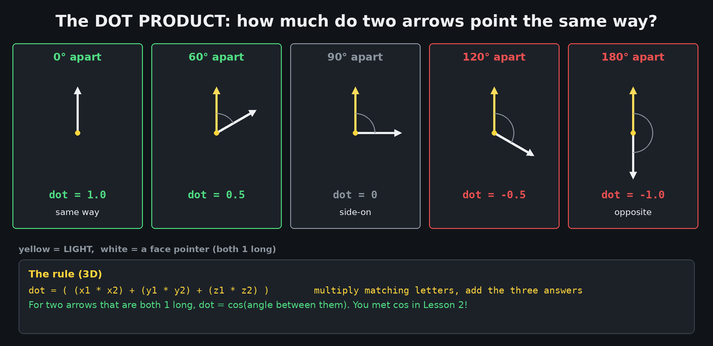
dot = ( (x1 * x2) + (y1 * y2) + (z1 * z2) )
1 = same way, 0 = side-on, -1 = opposite. A face that points away from the lamp gets a negative number, and we treat that as 0: no light.

5.5 Brightness to colour
Brightness 0 would make a face black, and a black face on a black background disappears. Real rooms have some light bouncing everywhere, so we add a little: AMBIENT = 0.2 means every face keeps at least 20% of its colour.
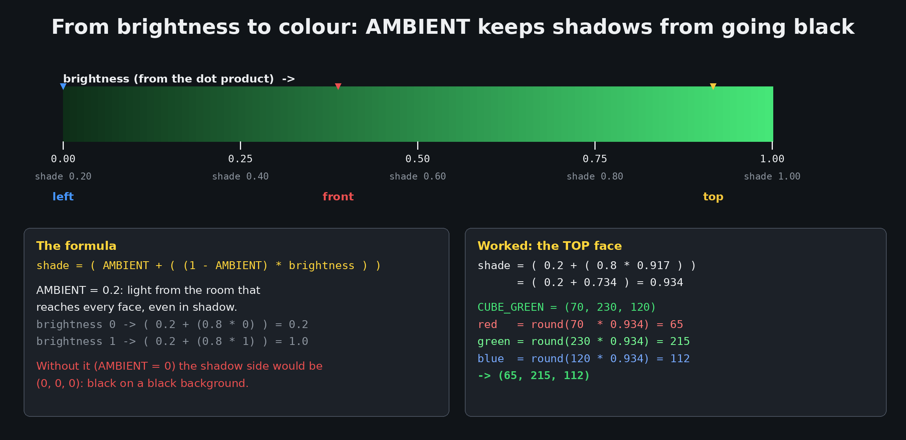
shade = ( AMBIENT + ( (1 - AMBIENT) * brightness ) ) runs from 0.2 to 1. Each of red, green and blue is multiplied by the shade and rounded to a whole number.Panels: 3.5.8a (top) the brightness ramp · 3.5.8b (bottom left) the formula · 3.5.8c (bottom right) worked: the TOP facedef shade_colour(colour, pointer):
brightness = dot(pointer, LIGHT) # -1 .. 1
if brightness < 0:
brightness = 0 # facing away from the light
shade = ( AMBIENT + ( (1 - AMBIENT) * brightness ) ) # 0.2 .. 1
red, green, blue = colour
return ( round(red * shade), round(green * shade), round(blue * shade) )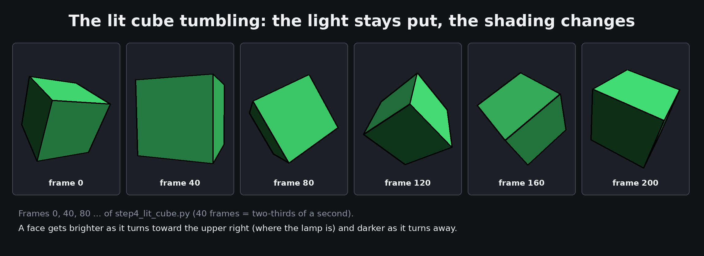
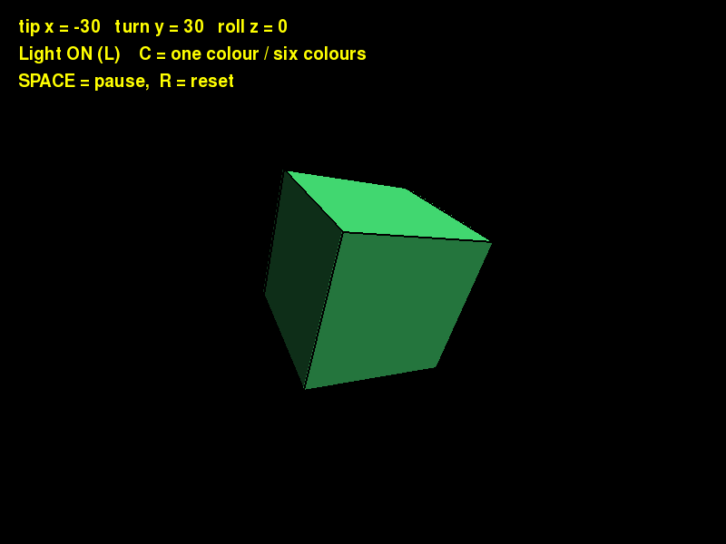
step4_lit_cube.py, the finished cube. L switches the light off and on, C swaps between one green and the six face colours.Q13Before any turning, what is the dot product of the top face's pointer (0, 1, 0) with LIGHT?
Show answer
( (0 * 0.48) + (1 * 0.6) + (0 * -0.64) ) = ( 0 + 0.6 + 0 ) = 0.6. Only the y part survives, because the pointer has nothing in x or z.Q14Why must face_pointer use turned_points and not world_points?
Show answer
Q15With AMBIENT = 0.2, what shade does a face get when its brightness is 0.5? What green value does CUBE_GREEN's 230 become?
Show answer
( 0.2 + ( 0.8 * 0.5 ) ) = ( 0.2 + 0.4 ) = 0.6. Green becomes round(230 * 0.6) = 138.Q16You change LIGHT to (0, 1, 0). Where is the lamp, and which face is brightest before any turning?
Show answer
Wrap up 2 MIN
1. A face is 4 corner numbers, listed clockwise as seen from outside. pygame.draw.polygon fills it.
2. Painting in list order goes wrong. The painter's method sorts the faces by average WORLD z and paints the furthest first.
3. A face whose corners go anticlockwise on the screen has its back to you. The cross product ( (A_x * B_y) - (A_y * B_x) ) tells you which way they go: positive means paint.
4. A face's pointer is the average of its turned SHAPE corners. The dot product of the pointer with LIGHT says how much light it catches.
5. shade = ( AMBIENT + ( (1 - AMBIENT) * brightness ) ) turns that into a colour, and AMBIENT stops shadows going black.
6. Each new step uses a different kind of coordinates: SCREEN for the clock test, WORLD for distance, SHAPE for light.
Q17Final check: list, in order, everything step4_lit_cube.py does to draw one frame.
Show answer
turned_points), moved away by cube_distance (kept in world_points) and projected (kept in screen_points). 3. For each of the 6 faces: look up its 4 screen points; skip it if the clock test says it is turned away; work out its average z; find its pointer and shade its colour. 4. Sort the faces that are left, furthest first. 5. Fill and outline each one in that order.Practice before Lesson 4
- Make a lit pyramid: 5 corners, a square base and 4 triangle faces.
pygame.draw.polygonfills triangles just as well. Watch out: the pointer trick (average of the corners) only works when every face is the same distance from the centre, so use the light only on the cube for now. - Add keys that move the lamp, for example J and K to swap LIGHT between (0.48, 0.6, -0.64) and (-0.48, 0.6, -0.64).
- Draw two cubes side by side, at x = -3 and x = +3, and put both cubes' faces into one
faces_to_drawlist, so the painter's method sorts them together. - Colour the shadow side with a hint of blue instead of plain dark: add a small amount to blue only, when brightness is 0.
Next time: Lesson 4, moving the camera
Until now the cube has done all the moving while you stood still at (0, 0, 0). In Lesson 4 you walk around the cube and look about. Looking left and right is rotate_y applied to the whole world with the angle the other way round, and looking up and down is rotate_x used the same way. Everything from today keeps working, because the clock test and the painter's method only ever look at what ends up on the screen.
Files
Download the code for this lesson (right-click a file and choose Save link as):
code/step1_fill_faces.py: six filled faces, painted in list order (wrong on purpose)code/step2_painter.py: the painter's method, with each face's average z shown; P comparescode/step3_hide_back_faces.py: the clock test skips faces turned away; B for x-raycode/step4_lit_cube.py: the lit solid cube; L for light, C for coloursimages/: every diagram on this page as a PNG- Figure index: every figure and table in the course, with its number. Numbers read
Fig lesson.part.figure, plus a letter for one panel of a picture (for exampleFig 3.4.2b).